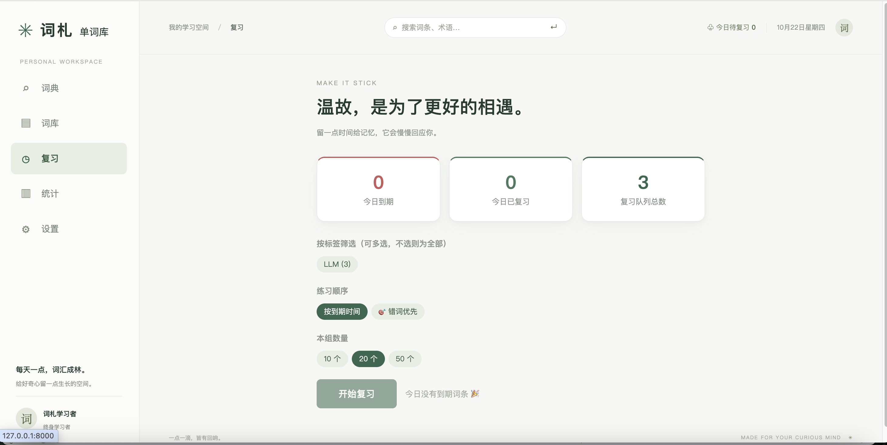
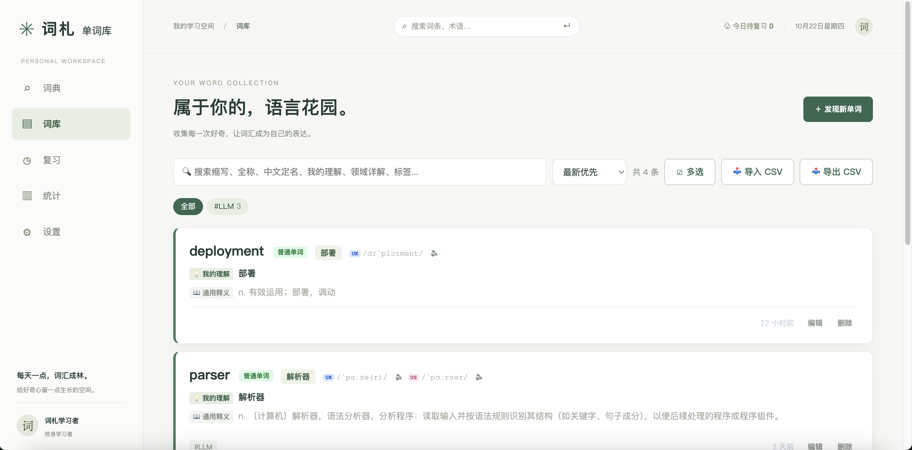
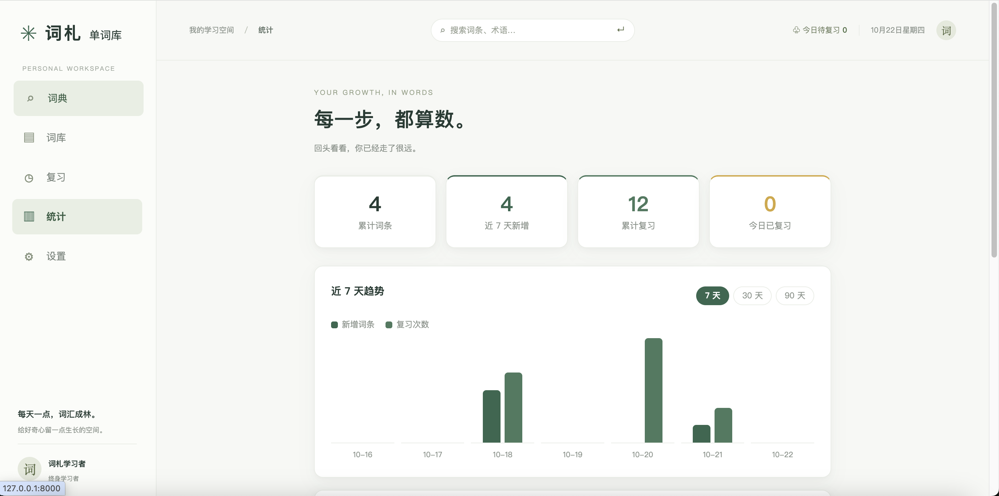

本地优先 · 开源 · Apache 2.0
查得到 · 记得下 · 找得快
面向 AI / 大模型从业者的英文术语记录本。词典和大模型左右对照，查完一键收藏，按间隔提醒复习。

面向 AI / 大模型从业者的英文术语记录本。词典和大模型左右对照，查完一键收藏，按间隔提醒复习。
读英文技术文档时，最烦的不是生词，是"认识的词在专业语境里完全不是那个意思"。
比如 token，词典给的是"代币；象征；凭证"，而你真正需要的是——
通用词典不会问你"在哪个领域"。所以我写了这个小工具，把两个答案放在同一页。
查词 → 对照 → 收藏 → 复习，没有额外环节
左栏音标、通用释义、双语例句；右栏按领域五段解读——中文定名、缩写全称、领域详解、领域例句、译文。流式返回，不用等整段。
1 / 2 / 4 / 7 / 15 / 30 天六档间隔。翻开卡自评"记住 / 模糊 / 忘记"，记住了升一档，忘了回到第一天。简单到三秒算清楚。
看 PDF 截图或论文插图时，Ctrl+V 直接粘进去，视觉模型识别图里的英文、提取候选术语、点一下回填搜索框。
FastAPI + SQLite，单端口托管前端。数据只在你自己机器上，不需要注册账号，不需要云同步。备份就是复制一个文件。



不需要 Docker，不需要数据库配置。下载下来，跑一遍安装脚本，填一个 API Key，启动。
.bat 文件# 克隆仓库 git clone https://github.com/ZhiJiu-An/cizha-vocab.git cd cizha-vocab # 安装依赖（首次运行） ./setup.sh # 启动（浏览器自动打开） ./start.sh